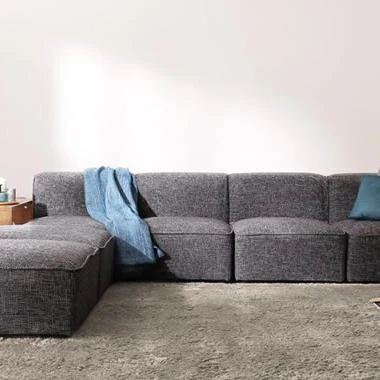
ローソファおすすめ
こんにちは 富山県で自然素材の家づくりをしている 「フジ創アイノス」です。 いつもありがとうございます。 ローソファについてご紹介いたします。 ローソファとは、、 一般的なソファより座面が低いソファ。(フロアソファと呼ば
続きを読む →FUJISOU AINOS JOURNAL
家づくりのこと、暮らしのこと。
日々の想いを、お伝えします。
社長ブログ 283件 ／ 新しい記事から 8・12ページ

こんにちは 富山県で自然素材の家づくりをしている 「フジ創アイノス」です。 いつもありがとうございます。 ローソファについてご紹介いたします。 ローソファとは、、 一般的なソファより座面が低いソファ。(フロアソファと呼ば
続きを読む →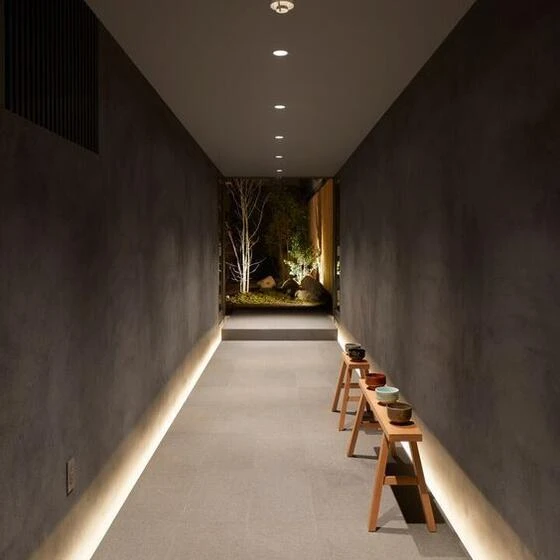
こんにちは 富山県で自然素材にこだわった家づくりをしている 「フジ創アイノス」です。 今日は、廊下照明について。。 さくっと紹介いたします。。 廊下照明設置場所、、 １，一般的なのはダウンライト ・廊下照明として最も一般
続きを読む →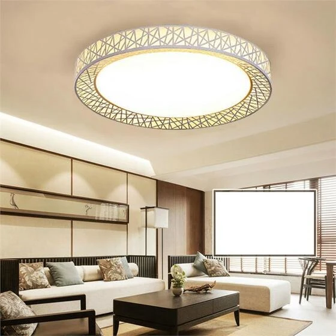
こんにちは 富山県で自然素材にこだわった家づくりをしている 「フジ創アイノス」です。 いつもありがとうございます。 今日は、おしゃれなリビング照明について書いていきます。 １，リビングの照明選びのポイント。 。リビングは
続きを読む →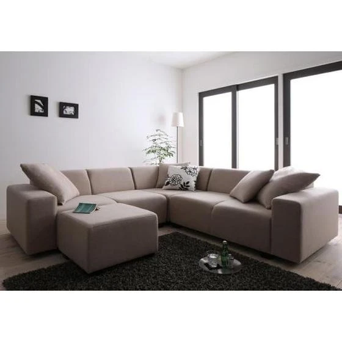
こんにちは 富山で自然素材の家つくりをしている 「フジ創アイノス」です。 ソファ選びについて記事を書いていきます。 ・ソファの種類は４種類。 最も一般的なものが「ベーシックタイプ」 ・スツールなどを組み合わせてお好みスタ
続きを読む →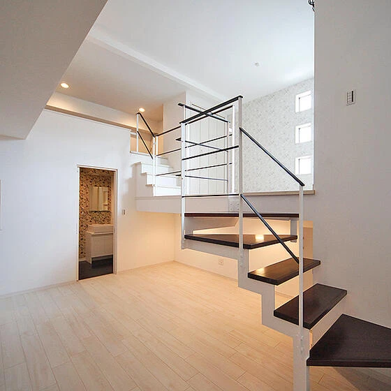
こんにちは。 富山県で自然素材にこだわった家づくりをしている 「フジ創アイノス」です。 いつもありがとうございます。 今日は、スキップフロアについて少し紹介致します。 スキップフロアとは。。 階段を介するなどして、床面の
続きを読む →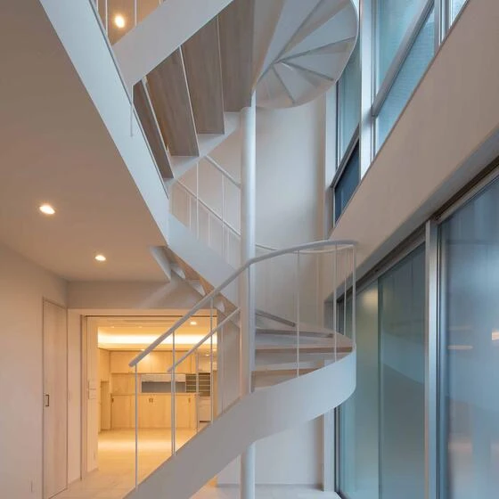
こんにちは。 富山県で自然素材にこだわった家づくりをしている 「フジ創アイノス」です。 今日は、階段の続きで 階段の種類をいくつかご紹介いたします。 １，階段の種類 1-1 直階段 ・直階段は、一般の住宅で最も多く使用さ
続きを読む →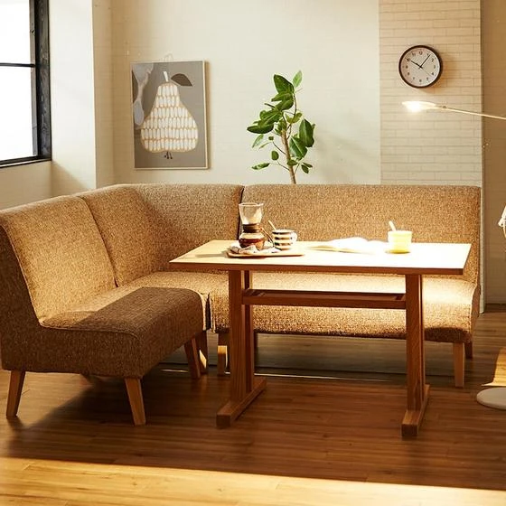
こんにちは 富山県で自然素材にこだわった家づくりをしている 「フジ創アイノス」です。 いつもありがとうございます。 １，使いやすいソファーテーブルの選び方とサイドテーブル ・高さが重要なポイント ソファーテーブルを選ぶ時
続きを読む →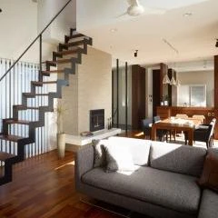
こんにちは。 富山県で自然素材にこだわった家づくりをしている 「フジ創アイノス」です。 いつもありがとうございます。 リビング階段についてご紹介いたします。 。リビング階段とは。。 その名の通り、リビングに階段を設置する
続きを読む →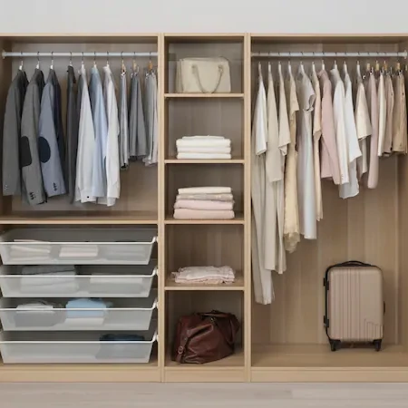
こんにちは。 富山で自然素材にこだわった家づくりをしている 「フジ創アイノス」です。 ウォークインクローゼットについて。。 理想の間取りとは❔ １，ＷＩＣのサイズと収納の目安。 1-1 ＷＩＣとは ・ウォークインクローゼ
続きを読む →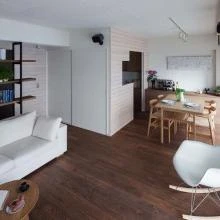
こんにちは。 富山県で自然素材にこだわった家づくりをしている 「フジ創アイノス」です。 今日は、 住み替えの際の注意点❔ 進め方の種類と活用ローンをご紹介いたします。 １，住み替えを検討するタイミング 1-1 ライフステ
続きを読む →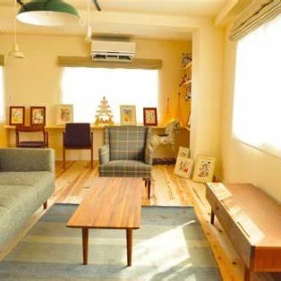
こんにちは。 富山県で自然素材にこだわった家づくりをしている 「フジ創アイノス」です。 今日のテーマは、、 中古住宅の築年数の狙い目は❔です。 購入時とポイントをお伝えいたします。 １，中古住宅の狙い目の築年数 1-1
続きを読む →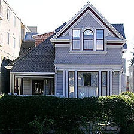
こんにちは。 富山県で自然素材にこだわった家づくりをしている 「フジ創アイノス」です。 今回は、買ってはいけない中古住宅を教えます。 建物と土地のチェックポイント １，買ってはいけない中古住宅₍建物₎特徴 1-1 違法建
続きを読む →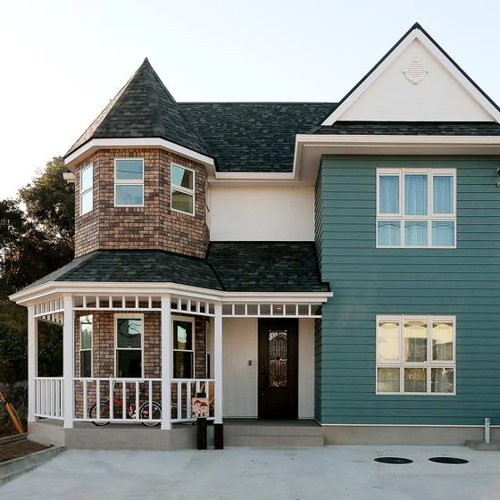
こんにちは。 富山県で自然素材にこだわった家づくりをしている 「フジ創アイノス」です。 今日は、レトロな古民家が好きな人必見。 そのリノベーションの注意点とメリットを教えます。 １，取り壊し寸前の建物を壊さずに活用すれば
続きを読む →こんにちは。 富山県で自然素材にこだわった家づくりをしている 「フジ創アイノス」です。 今年、最初の更新は、、 「空き家バンク」というもの。。 １，空き家バンク ・空き家バンクとは、空き家を売りたい人と空き家を買いたい人
続きを読む →あけましておめでとうございます。 2023年になりました。 こんにちは。 富山県で自然素材にこだわった家づくりをしている 「フジ創アイノス」です。 今年もよろしくお願いいたします。 2023年、色々更新してまいります。
続きを読む →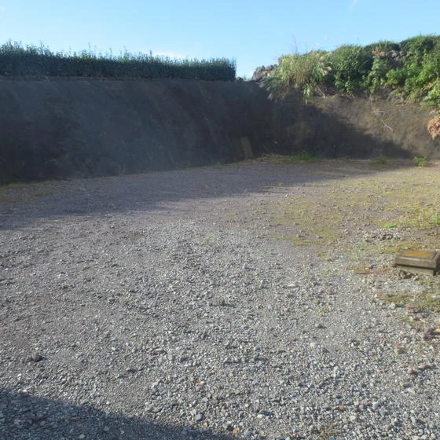
こんにちは 富山県で自然素材にこだわった家づくりをしている 「フジ創アイノス」です。 いつもありがとうございます。 土地についてまたご紹介いたします。 高低差がある土地に家を建てたいひと必見。 メリットとデメリットをお伝
続きを読む →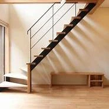
こんにちは。 富山県で自然素材にこだわった家づくりをしている 「フジ創アイノス」です。 いつもありがとうございます。 リフォームについて。。 階段もリフォームしたいですよね❔ 少し階段リフォームについてご紹介いたします。
続きを読む →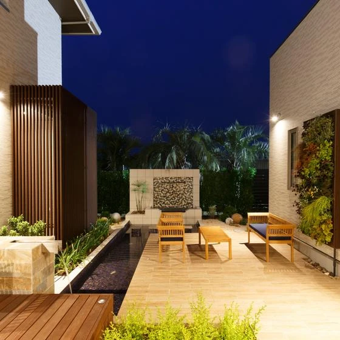
こんにちは 富山県で自然素材にこだわった家づくりをしている 「フジ創アイノス」です。 いつもありがとうございます。 住まいの設計について 「ゾーニング」という言葉からご紹介いたします。 １，設計の土台となる「ゾーニング」
続きを読む →
こんにちは 富山県で自然素材にこだわった家づくりをしている 「フジ創アイノス」です。 いつもありがとうございます。 リフォームは、部屋だけではない。。 トイレもリフォームしたい人、必見。 トイレリフォームについて書いてい
続きを読む →
こんにちは 富山県で自然素材にこだわった家つくりをしている 「フジ創アイノス」です。 いつもありがとうございます。 戸建てリノベーションの避けられない３つのデメリットをご紹介いたします。 解決策もご紹介いたします。 １，
続きを読む →
こんにちは 富山県で自然素材にこだわった家づくりをしている 「フジ創アイノス」です。 いつもありがとうございます。 リフォーム工事のときの注意をご紹介いたします。 １，リフォーム工事中に起こりやすいトラブル 1-1 打ち
続きを読む →
こんにちは 富山県で自然素材にこだわった家づくりをしている 「フジ創アイノス」です。 いつもありがとうございます。 今日は、空き家リノベーションについてご紹介いたします。 １，空き家リノベーション相場 ・空き家リノベーシ
続きを読む →
こんにちは 富山県で自然素材にこだわった家づくりをしている 「フジ創アイノス」です。 いつもありがとうございます。 一戸建てにかかる維持費についてご紹介いたします。 マンションと比較して見ました。 １，一戸建てでかかる維
続きを読む →
こんにちは 富山県で自然素材にこだわった家づくりをしている 「フジ創アイノス」です。 いつもありがとうございます。 土地探しにかかる時間をご紹介いたします。 土地探しの流れ、失敗しないポイント。 ・土地探しにかかる期間は
続きを読む →